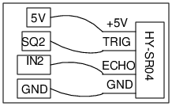

Schematic

- SR04 sensor has a pair of 40kHz Piezo discs along with some circuitry.
- Applying a voltage pulse to the Trigger pin generates a burst of 40kHz sound
from the transmitter disc.
- If the sound burst gets reflected from a surface and falls on the receiver disc, it generates an electrical signal.
- The time interval between these two pulses is measured.
- The distance to the surface is calculated by assuming the velocity of sound in air.
Instructions
- Make the connections and keep a flat object in front of the sensor.
- Press the START button to record the distance, as a function of time.